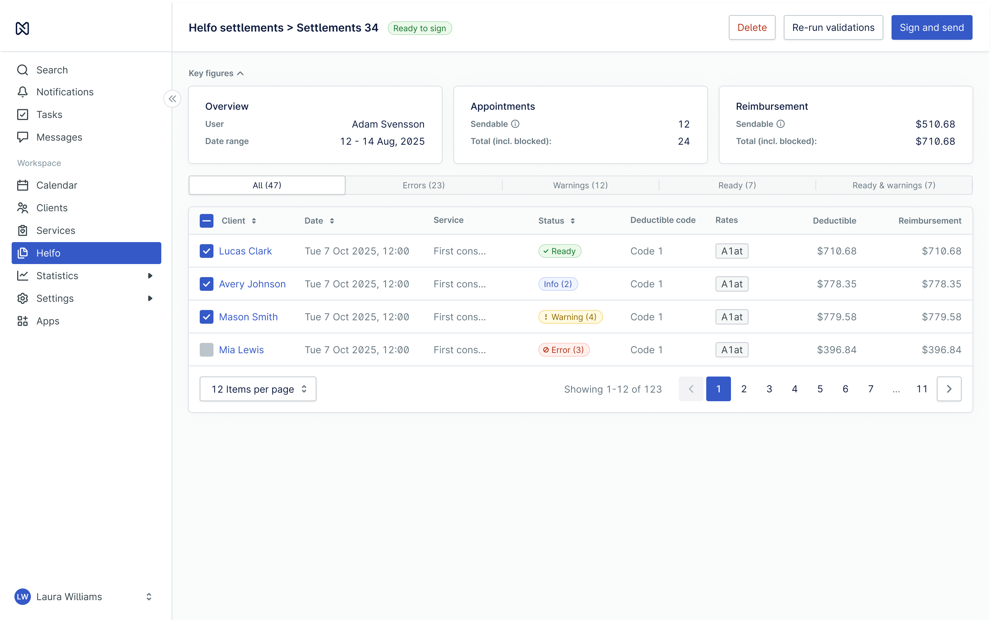
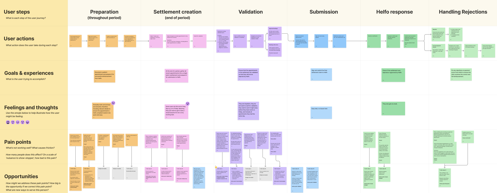
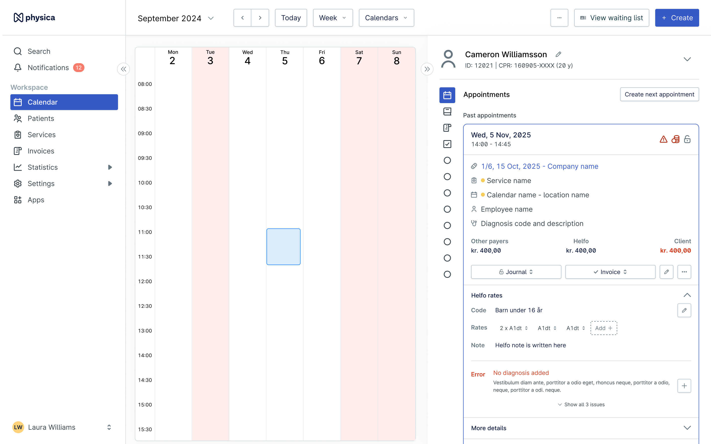
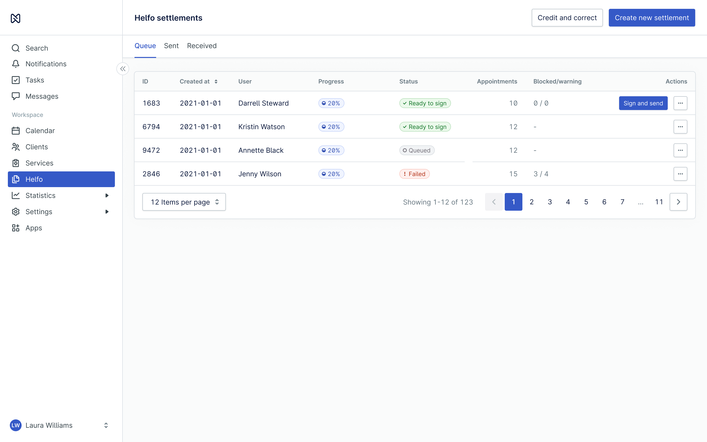
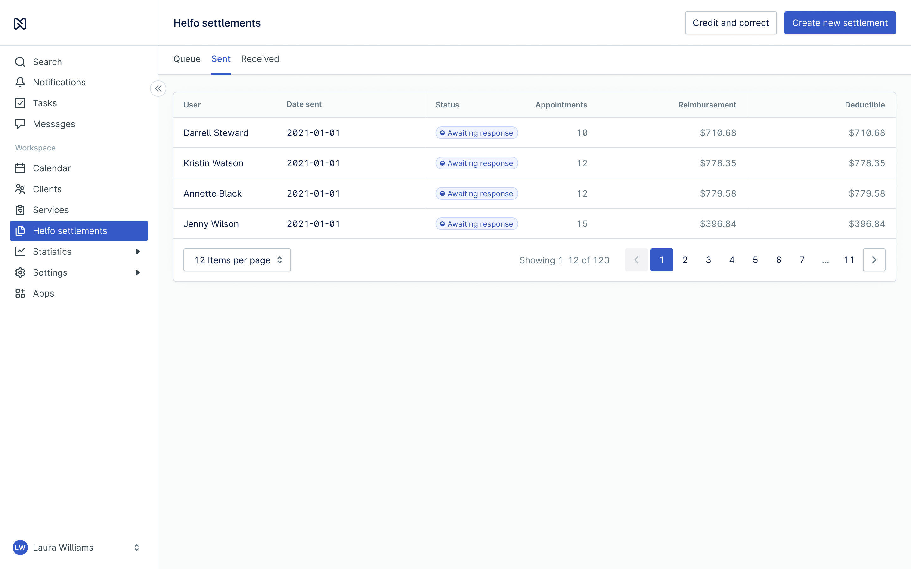
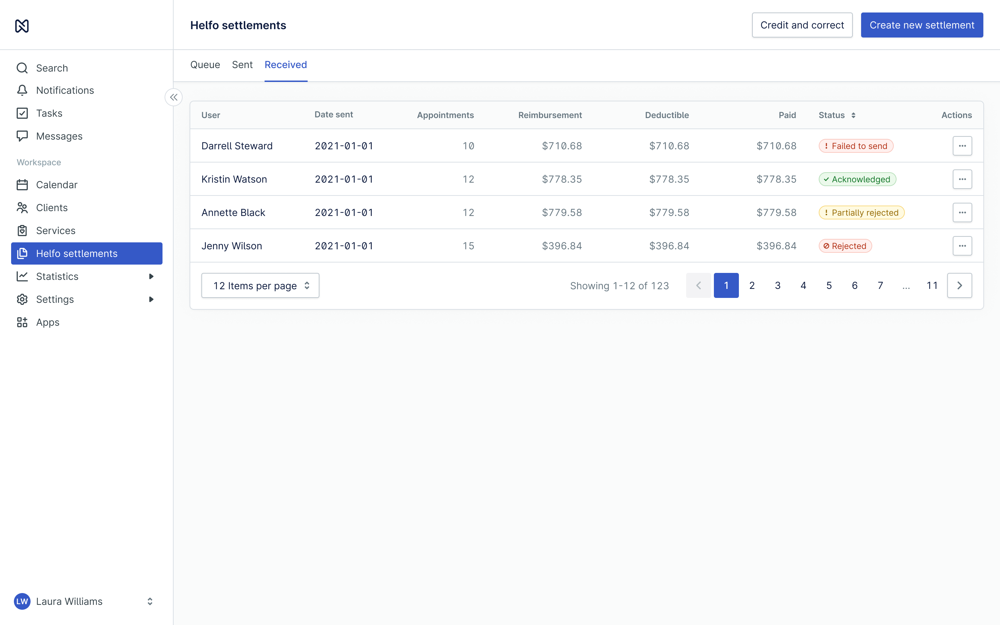

HELFO SETTLEMENTS
Treat the patient. Then actually get paid for it.
- ROLE
- Product designer, sole designer on it
- TEAM
- Me, a product manager, two developers
- TIMELINE
- 3 weeks design, 5 months build, ongoing
- PLATFORM
- Web app
A large part of a Norwegian clinic's income arrives from Helfo, the public body that reimburses treatment. The claim has to be right or the money does not come. I designed the whole path it travels: preparing an appointment so it can be claimed, batching a period into a settlement, validating it, signing and submitting it, and fixing whatever comes back rejected. It was also one of the workflows holding users on an old desktop product, so getting it right was what let them move.

IMAGE · VALIDATIONTHE MONEY IS THE FEATURE
A claim to Helfo carries tariff codes, patient deductibles, eligibility rules, and a set of validation requirements. Any one of them can stop the payment. The clinic does not find out at the moment of treatment either. They find out later, when the settlement comes back rejected or the amount that arrives is not the amount they earned.
The people doing this work are treating patients all day. Claim admin happens in the gaps between appointments and at the end of a period, when everyone is already tired. Nobody wants a claims tool. They want the money to arrive without having to think about it.
On the business side the same failures cost us directly. A rejected or delayed claim becomes a support conversation, a late payment, and a clinic with less reason to trust the product with its income. This is the part of the system where trust is not a soft metric: the money is real, the actions are not reversible, and being vague about either is the fastest way to lose a customer.
DISCOVERY & INSIGHT
Discovery ran three ways at once: interviews with clinics doing settlements today, internal knowledge interviews with the people who already carried the domain, support, finance, and developers who had lived with the old workflow, and a look at how competing systems handled the same claim.
They do not want to understand Helfo. They want to be paid for the work they already did.
The insight that shaped the design was that the goal is not a correct claim, it is money received, with as little disruption to the working day as possible. Which meant the whole thing had to read as one clear line: validate, send, confirm it arrived. If a user cannot see where in that line they are, they assume the worst and open a support ticket, which is exactly the outcome we were trying to design away.
The second finding was about where the effort should sit. Claim work spread across a whole period is invisible. Claim work saved up for period end is a wall. So the daily flow had to stay light enough to survive a busy clinic, while still carrying enough information that the end of the month was a short job instead of an investigation.
CORRECTNESS FIRST, COMFORT AFTER
Users were mid-migration and the deadline was not ours to move, so there had to be an MVP. That set the order of the work plainly: everything required for the money to actually arrive was in scope, and a good deal of the experience around it was not. Where those two competed, correctness won. It is not the trade I would want to make on every project, but on this one a beautiful flow that pays a clinic the wrong amount is worse than a plain flow that pays them correctly.
So I designed two things at once. A short-term version that was simple enough to ship and safe enough to migrate onto, and a long-term direction to walk toward in pieces once people were actually on it. Naming the long version early mattered more than it sounds: it kept the cuts honest, because we could point at where each one was going to be repaid instead of pretending it was fine.
That is still how it runs. The workflow has been improved continuously since release, and the direction we drew during those three weeks is still the direction.
THE FLOW
Six stages, mapped before anything was designed: what the user does at each one, what they are trying to accomplish, how it feels, where it hurts, and what we could do about it. The pain points row is what set the priorities, and the stages below are the same six, in order.

IMAGE · THE JOURNEYPREPARATION, ALL PERIOD LONG
A claim starts at the appointment. Documenting it while the patient is still fresh in mind is what makes the settlement possible later, so this step is spread thin across the whole period and kept as light as the clinical day allows. The reimbursement details live next to the appointment itself: the tariff code, the rates claimed, and a note, right where the practitioner already is.

IMAGE · PREPARATIONONE PERIOD, ONE SETTLEMENT
At the end of a period the appointments are gathered into a single batch: the settlement. One object to check, sign and send, instead of a pile of individual claims to keep track of. It lands in the queue shown at the top of this page, where its progress and status are the first things visible.

IMAGE · THE SETTLEMENTFAIL IT HERE, NOT AT HELFO
Validation is the step that earns the whole flow. Every appointment in the settlement is checked against the rules that Helfo would reject it for, while it can still be fixed by the person who knows what happened in the room. The settlement opens on its key figures, how much is sendable against how much is blocked, then splits the appointments by what is wrong with them: errors, warnings, ready, and ready with warnings. Errors are excluded from the batch until they are dealt with, so what gets signed is what can actually be paid.
SIGN AND SEND
Submitting is the irreversible moment, so it is the one place in the flow that slows down on purpose. What is being sent, for which period, and what it is worth, all stated before the signature rather than after it. Once it is signed the settlement moves to sent and says plainly that it is waiting, because the honest answer at that point is that nothing has happened yet.

IMAGE · SUBMISSIONWHAT HELFO SAID BACK
A submitted settlement is not a finished one. The response comes back acknowledged, partially rejected, rejected, or failed to send, and until the user can see which, they have no idea whether they are getting paid. So the state of every settlement is on the front of it, next to what was claimed and what was actually paid. Partially rejected is the state that matters most: the money arrived, but not all of it, and that is easy to miss and expensive to miss.

IMAGE · HELFO RESPONSEA REJECTION IS A JOB, NOT AN ERROR
Rejections and payment errors are where the money is actually won or lost, and they arrive after the work is done and the attention has moved on. A rejection points back at the appointment that caused it, so the fix happens there, where the error is stated plainly and what is missing can be added.
Then the corrected work goes around the same loop again: back into a settlement, validated, signed, and sent a second time. Nothing about the second pass is a separate flow, and that is deliberate. The path to recovering the money is the path the user already knows, so a rejection costs them a repeat rather than a new thing to learn.
DESIGN DECISIONS
- Light every day, short at the end
- The daily step is deliberately small, because it competes with patients. The trade is that it has to carry enough for period end to stay a short, boring job. Moving effort earlier is the only way to make the wall at the end of the month disappear.
- Validate before Helfo does
- Every rule we could check ourselves is checked while the user can still act on it. A rejection caught in the product costs a minute. The same rejection caught by Helfo costs a payment cycle and a support conversation.
- Never leave them guessing
- Because it is money, uncertainty is the expensive failure. Every settlement states where it stands and what was actually paid, so the user never has to ask where their money is. A silent state means they assume the worst and call support.
- Two directions, on purpose
- A short-term version simple enough to migrate onto, and a long-term direction to build toward in chunks. Designing both meant every cut had a named place it would come back, which is what kept the MVP from quietly becoming the final product.
IMPACT
- 3,055users unblocked for migration off the desktop product
- 66%of respondents rated the flows 6 or 7 out of 7
- 5.6customer effort score out of 7, across the flows
No target metric was set for this project, so these are the numbers we measured rather than a bar we agreed to clear. I would rather say that than dress them up.
The migration number is the one that mattered to the business. Helfo and claims were among the blockers keeping roughly three thousand users on an old desktop setup, so unblocking them retired Citrix licence cost and moved those clinics onto a modern web product at the same time.
WHAT I LEARNED
The hard part of a project this size was not the screens, it was the number of parties who each held a piece of the truth: product, developers, support, the people who knew the domain from years of doing it, and Helfo's own rules sitting outside all of it. What worked was treating internal knowledge as research rather than as background chatter. Several rules we would have shipped wrong were caught in those conversations, not in user interviews.
The other lesson was about the domain itself. Designing for money is not designing for care. Users have less patience, expect every state to be spelled out, and cannot undo what they submit. When a payment does not arrive it is not an inconvenience, it is their business. That raises the cost of vagueness in a way I had not felt as sharply on clinical work.
What is next is the long-term direction we drew and then cut down: better validation, fewer places where the user has to navigate away and back to finish one thing, and steadily repaying the experience we traded to make the deadline. It is still being improved, which is the honest state of it.